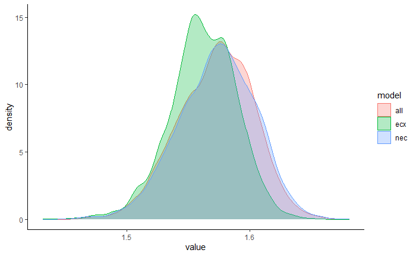
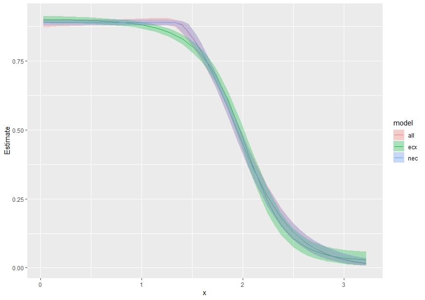
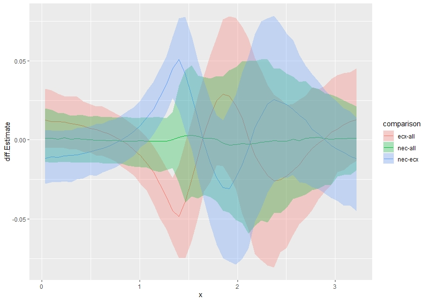

Overview
With bayesnec we have included a function that allows bootstrapped comparisons of posterior predictions. The main focus here is to showcase how the user can fit several different bnec model fits and can compare differences in the posterior predictions across these fits for individual endpoint estimates (e.g. nec, nsec or ecx) or across a range of predictor (x) values. Below we demonstrate usage of compare_posterior for objects of class bayesnecfit and bayesmanecfit. In this example we compare different types of models and model sets using a single dataset. However, the intent of this function is to allow comparison across different datasets that might represent, for example, different levels of a fixed factor covariate. At this time bnec does not allow inclusion of an interaction with a fixed factor. Including an interaction term within each of the non-linear models implemented in bayesnec is relatively straightforward, and may be introduced in future releases. However, in many cases the functional form of the response may change with different levels of a given factor. The substantial complexity of defining all possible non-linear model combinations at each factor level means it unlikely this could be feasibly implemented in bayesnec in the short term. In the meantime the greatest flexibility in the functional form of individual model fits can be readily obtained using models fitted independently to data within each factor level.
Comparing posterior endpoint values
library(brms)
library(bayesnec)
data(nec_data)
# Fit a set of models
exmp <- bnec(data = nec_data, x_var = "x", y_var = "y",
model = "all",
family = Beta(link = "logit"),
wi_method = "pseudobma")
class(exmp) # bayesmanecfitThis call fits all models that are suitable for modelling beta response data using a logit link. We can pull out the nec models and the ecx models separately, to create two more alternative model fits of this data.
Now we have three different averaged model fits, all of class bayemanec in this case (because they all contain multiple fits). We can compare their posterior estimates of the ex10 values using compare_posterior.
library(tidyverse)
post_comp <- compare_posterior(list("all" = exmp, "ecx" = exmp_ecx, "nec" = exmp_nec), comparison = "ecx", ecx_val = 10)
names(post_comp)
# "posterior_list"
# "posterior_data"
# "diff_list"
# "diff_data"
# "prob_diff"The compare_posterior function outputs several elements in a named list. This includes the posterior_data for each model in the comparison as a data.frame which we can use to plot a geom_density plot of the posterior estimates, so they can be compared visually.
ggplot(post_comp$posterior_data, aes(x=value)) +
geom_density(aes(group=model, colour=model, fill = model), alpha=0.3) +
theme_classic() 
From this you can see that the ec10 estimates are very similar for the nec and all. This is because the nec model types dominate the model weights in this all fit, see exmp$mod_stats$wi. The ec10 estimate is much lower (more conservative) for the ecx based models.
The data.frame “diff_data” can be used to make a similar plot, but specifically for the differences among models.
ggplot(post_comp$diff_data, aes(x=diff)) +
geom_density(aes(group=comparison, colour=comparison, fill = comparison), alpha=0.3) +
theme_classic() 
This shows clearly the differences among the three estimates, with there being no difference in the nec and all estimates (the probability density overlaps zero), and a tendency for the ecx to be lower than all and nec. Finally, the probability that the endpoint estimate for one model set is greater than the other is obtained in “prob_diff”. Here you can see there is ~50% chance that nec is greater or less than all (i.e. they do not differ), but a 97% chance that the ecx estimate is lower than the other two.
post_comp$prob_diff
# all ecx nec
# all 1.0000 0.9730 0.5020
# ecx 0.0325 1.0000 0.0365
# nec 0.5350 0.9675 1.0000Comparing posterior fitted values
The user can also compare posterior fitted values across the full range of x values, using comparison = "fitted".
library(tidyverse)
library(bayesnec)
post_comp_fitted <- compare_posterior(list("all" = exmp, "ecx" = exmp_ecx, "nec" = exmp_nec), comparison = "fitted", precision = 50)In the case of comparison = "fitted" most of the elements returned by compare_posterior are class data.frame, with summary values for the posteriors, difference values and probabilities returned for each value of x, for each model, or model comparison.
head(post_comp_fitted$posterior_data)
model x Estimate Q2.5 Q97.5
# 1 all 0.03234801 0.8885559 0.8718261 0.8991815
# 2 all 0.09741274 0.8885995 0.8733894 0.8991821
# 3 all 0.16247747 0.8886515 0.8745928 0.8991952
# 4 all 0.22754220 0.8887310 0.8759464 0.8991952
# 5 all 0.29260692 0.8888061 0.8767969 0.8992226
# 6 all 0.35767165 0.8888948 0.8775943 0.8992401
head(post_comp_fitted$diff_data)
# x comparison prob diff.Estimate diff.Q2.5 diff.Q97.5
# 1 0.03234801 ecx-all 0.9185 0.012593751 -0.004832162 0.032435951
# 2 0.03234801 nec-all 0.5595 0.001079684 -0.013983908 0.019867356
# 3 0.03234801 nec-ecx 0.0940 -0.011610798 -0.027872420 0.005847878
# 4 0.09741274 ecx-all 0.9125 0.011564489 -0.005086656 0.031355968
# 5 0.09741274 nec-all 0.5575 0.001122890 -0.014437448 0.018929807
# 6 0.09741274 nec-ecx 0.0970 -0.010600105 -0.026747137 0.005956780Using the collated posterior_data we can plot the predicted curves with confidence bounds for each of the input models. This shows clearly that the ecx model set begins to decline earlier than the nec or all sets, which are flat prior to the nec step point, and then decline more rapidly.
ggplot(post_comp_fitted$posterior_data) +
geom_line(aes(x=x, y=Estimate, color= model), size=0.5) +
geom_ribbon(aes(x=x, ymin=Q2.5, ymax=Q97.5, fill=model), alpha=0.3) 
We can plot the differences between pairs of models in the list by plotting “diff.Estimate” from “diff_data” and using colors for the different comparisons. This plot highlights where the differences among these model sets are the greatest. As we have seen for ec10, the nec and all model sets are relatively similar across the entire range of concentrations (x) (green band overlaps zero). The red band is the difference between ecx and all and clearly shows that the ecx set has higher estimates than all at low x values, substantially lower estimates than all at low-moderate x values, higher estimates again in the centre of the x range, and then lower estimates than all towards to upper end of the x range. The blue band shows the difference between the nec and ecx model sets, which given the similarity between nec and all, shows an inverted pattern to the red band.
ggplot(post_comp_fitted$diff_data) +
geom_line(aes(x=x, diff.Estimate, color=comparison), size=0.5) +
geom_ribbon(aes(x=x, ymin=diff.Q2.5, ymax=diff.Q97.5, fill=comparison), alpha=0.3) 
And finally we can plot the probability that one model is greater than the other by plotting “prob” from “diff_data”. The pattern of this plot is identical to the plot of differences, but the y axis now shows the probability of these differences. The green line hovers around 0.5 clearly indicating the lack of significant difference in the nec and all model sets at any point of the x-curve. The red and blue curves pass through 0.5 at several points, meaning there are parts of the curve where there is no significant difference between the ecx and the nec or all predictions. The greatest probability of difference among these curves is between values of ~1 and ~1.5 of x.
ggplot(post_comp_fitted$diff_data) +
geom_line(aes(x=x, prob, color=comparison), size=0.5)